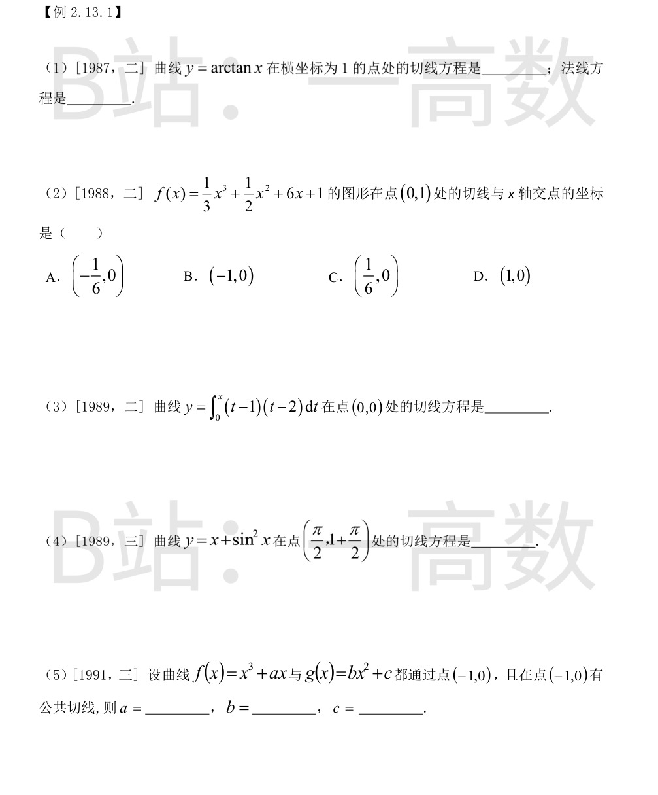
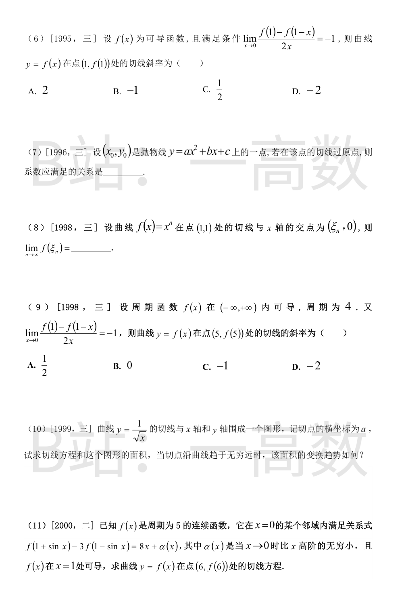
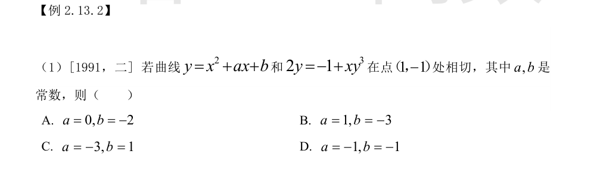
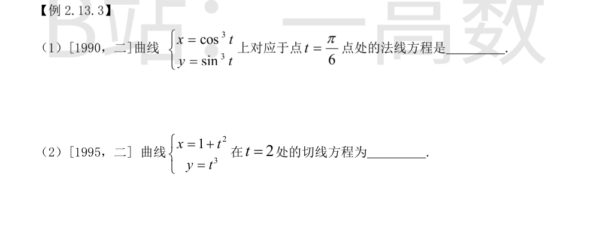
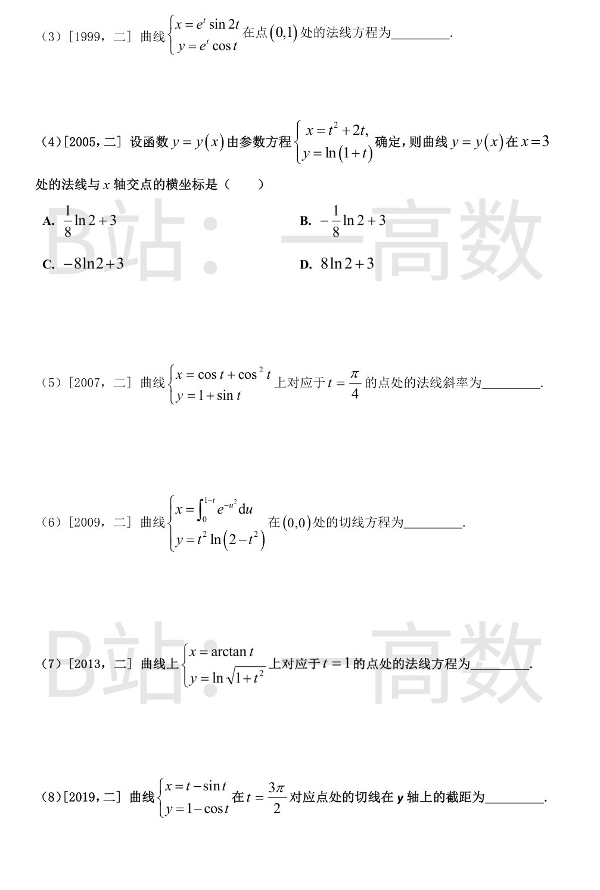
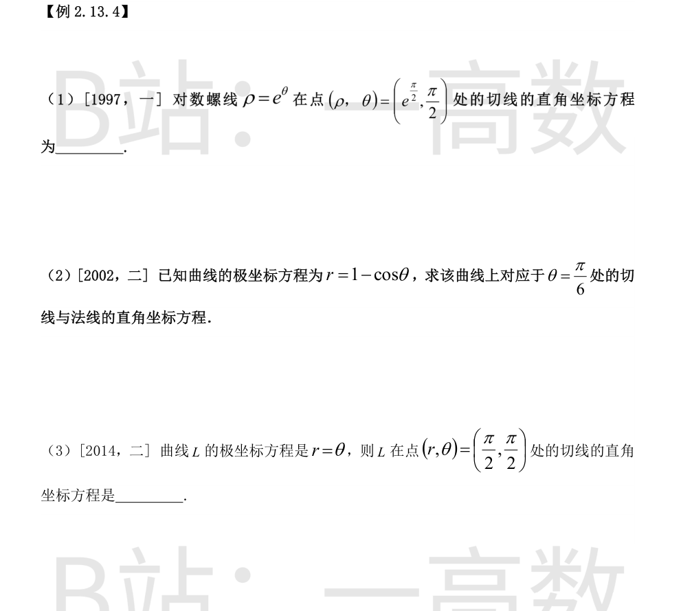

切点：$x=1,\ y=\arctan 1=\frac{\pi}{4}$，即 $\left(1,\frac{\pi}{4}\right)$。
$$y'=\frac{1}{1+x^2},\qquad y'(1)=\frac{1}{2}$$
切线：$y-\frac{\pi}{4}=\frac{1}{2}(x-1)$，即 $y=\frac{x}{2}+\frac{\pi}{4}-\frac{1}{2}$。
法线斜率为 $-2$：$y-\frac{\pi}{4}=-2(x-1)$，即 $y=-2x+2+\frac{\pi}{4}$。
$$f'(x)=x^2+x+6,\qquad f'(0)=6$$
切线：$y-1=6(x-0)$，即 $y=6x+1$。令 $y=0$ 得 $x=-\frac{1}{6}$。
故交点为 $\left(-\frac{1}{6},0\right)$，选 A。
变限积分求导：$y'=(x-1)(x-2)$，故 $y'(0)=2$。
切线：$y-0=2(x-0)$，即 $y=2x$。
$$y'=1+2\sin x\cos x=1+\sin 2x,\qquad y'\Big|_{x=\pi/2}=1+\sin\pi=1$$
切线：$y-\left(1+\frac{\pi}{2}\right)=1\cdot\left(x-\frac{\pi}{2}\right)$，即 $y=x+1$。
都通过 $(-1,0)$：
$$f(-1)=-1+a=0\Rightarrow a=1;\qquad g(-1)=b+c=0$$
在 $x=-1$ 处切线斜率相等：
$$f'(x)=3x^2+a,\quad f'(-1)=3+a=4;\qquad g'(x)=2bx,\quad g'(-1)=-2b$$
由 $-2b=4$ 得 $b=-2$；再由 $b+c=0$ 得 $c=2$。
$$\lim_{x\to0}\frac{f(1)-f(1-x)}{2x}=\frac{1}{2}\lim_{x\to0}\frac{f(1-x)-f(1)}{-x}=\frac{f'(1)}{2}=-1$$
故 $f'(1)=-2$，即切线斜率为 $-2$，选 D。
切线斜率 $k=2ax_0+b$，切线方程 $y-y_0=(2ax_0+b)(x-x_0)$。
过原点：$-y_0=-(2ax_0+b)x_0$，即 $y_0=x_0(2ax_0+b)$。代入 $y_0=ax_0^2+bx_0+c$：
$$ax_0^2+bx_0+c=2ax_0^2+bx_0\ \Longrightarrow\ c=ax_0^2$$
$f'(x)=nx^{n-1}$，$f'(1)=n$，切线 $y-1=n(x-1)$。令 $y=0$：
$$\xi_n=1-\frac{1}{n}\ \Longrightarrow\ f(\xi_n)=\left(1-\frac{1}{n}\right)^{n}\xrightarrow[n\to\infty]{}e^{-1}$$
同第 (6) 题：$\frac{1}{2}\lim_{x\to0}\frac{f(1-x)-f(1)}{-x}=\frac{f'(1)}{2}=-1$，故 $f'(1)=-2$。
由周期性（周期 4），$f'(x+4)=f'(x)$，故
$$f'(5)=f'(1)=-2$$
切线斜率为 $-2$，选 D。
切点 $\left(a,\frac{1}{\sqrt a}\right)$，$y'=-\frac{1}{2}x^{-3/2}$，切线
$$y-\frac{1}{\sqrt a}=-\frac{1}{2a^{3/2}}(x-a)$$
令 $y=0$ 得 $x$ 轴截距 $x=a+2a^2$；令 $x=0$ 得 $y$ 轴截距 $y=\frac{1}{\sqrt a}+\frac{a}{2a^{3/2}}=\frac{3}{2}a^{-1/2}$。
面积：
$$S=\frac{1}{2}\,(a+2a^2)\cdot\frac{3}{2}a^{-1/2}=\frac{3}{4}\sqrt a\,(1+2a)=\frac{3}{4}\left(\sqrt a+2a^{3/2}\right)$$
当切点沿曲线趋于无穷远（$a\to+\infty$）时，$S\to+\infty$，面积趋于无穷大。
【仲裁修正】独立校验发现分歧，经仲裁重解，以本答案为准：solver 求 x 轴截距时代数出错：由 (x-a)/(2a^{3/2})=1/√a 得 x-a=2a，截距应为 3a 而非 a+2a²，故 S=½·3a·3/(2√a)=9√a/4，A、B 正确
令 $t=\sin x$，当 $x\to0$ 时 $t\to0$，且 $8x+\alpha(x)=8\arcsin t+o(t)=8t+o(t)$，故
$$f(1+t)-3f(1-t)=8t+o(t)$$
由 $f$ 在 $x=1$ 处可导：$f(1\pm t)=f(1)\pm f'(1)t+o(t)$，代入：
$$-2f(1)+4f'(1)\,t+o(t)=8t+o(t)$$
比较系数：$f(1)=0,\ f'(1)=2$。
周期为 5：$f(6)=f(1+5)=f(1)=0$；且 $f(x+5)=f(x)$ 两边求导（在相应可导点）得 $f'(6)=f'(1)=2$。
切线：$y-0=2(x-6)$，即 $y=2x-12$。

两曲线都过 $(1,-1)$：第二条自动满足 $2(-1)=-1+1\cdot(-1)^3=-2$；第一条要求
$$-1=1+a+b\ \Longrightarrow\ a+b=-2$$
相切需切线斜率相等。抛物线：$y'=2x+a$，在 $x=1$ 处为 $2+a$。
第二条隐函数求导：$2y'=y^3+3xy^2y'$，即 $y'=\dfrac{y^3}{2-3xy^2}$，在 $(1,-1)$ 处
$$y'=\frac{(-1)^3}{2-3\cdot1\cdot(-1)^2}=\frac{-1}{-1}=1$$
故 $2+a=1\Rightarrow a=-1$，$b=-2-a=-1$。选 D。


$$\frac{dx}{dt}=-3\cos^2t\sin t,\qquad \frac{dy}{dt}=3\sin^2t\cos t,\qquad \frac{dy}{dx}=-\tan t$$
$t=\frac{\pi}{6}$：$\frac{dy}{dx}=-\frac{1}{\sqrt3}$，切点 $\left(\cos^3\frac{\pi}{6},\,\sin^3\frac{\pi}{6}\right)=\left(\frac{3\sqrt3}{8},\,\frac{1}{8}\right)$。法线斜率 $k=\sqrt3$：
$$y-\frac{1}{8}=\sqrt3\left(x-\frac{3\sqrt3}{8}\right)\ \Longrightarrow\ y=\sqrt3\,x-1$$
$$\frac{dy}{dx}=\frac{3t^2}{2t}=\frac{3t}{2}\Big|_{t=2}=3$$
切点 $(1+4,\ 8)=(5,8)$。切线：$y-8=3(x-5)$，即 $y=3x-7$。
$x=0\Rightarrow\sin2t=0$；取 $t=0$（此时 $y=e^0\cos0=1$，对应点 $(0,1)$）。
$$x'(t)=e^t(\sin2t+2\cos2t),\ x'(0)=2;\qquad y'(t)=e^t(\cos t-\sin t),\ y'(0)=1$$
$\dfrac{dy}{dx}=\dfrac{1}{2}$，法线斜率 $k=-2$：$y-1=-2(x-0)$，即 $2x+y-1=0$。
$x=3\Rightarrow t^2+2t=3\Rightarrow t=1$（$t=-3$ 使 $y=\ln(1+t)$ 无定义，舍去），$y=\ln2$。
$$\frac{dy}{dx}=\frac{1/(1+t)}{2t+2}=\frac{1}{2(t+1)^2}\Big|_{t=1}=\frac{1}{8}$$
法线斜率 $-8$：$y-\ln2=-8(x-3)$。令 $y=0$：$x-3=\frac{\ln2}{8}$，即 $x=3+\frac{1}{8}\ln2$。选 A。
$$\frac{dx}{dt}=-\sin t-2\sin t\cos t,\qquad \frac{dy}{dt}=\cos t$$
$t=\frac{\pi}{4}$：$\frac{dx}{dt}=-\frac{\sqrt2}{2}(1+\sqrt2)$，$\frac{dy}{dt}=\frac{\sqrt2}{2}$，
$$\frac{dy}{dx}=\frac{\sqrt2/2}{-\frac{\sqrt2}{2}(1+\sqrt2)}=-\frac{1}{1+\sqrt2}=1-\sqrt2$$
法线斜率 $=-\dfrac{1}{1-\sqrt2}=\dfrac{1}{\sqrt2-1}=\sqrt2+1$。
$x=0\Rightarrow\int_0^{1-t}e^{-u^2}\,du=0\Rightarrow t=1$，此时 $y=1\cdot\ln1=0$，确过 $(0,0)$。
$$\frac{dx}{dt}=-e^{-(1-t)^2}\Big|_{t=1}=-1$$
$$\frac{dy}{dt}=2t\ln(2-t^2)-\frac{2t^3}{2-t^2}\Big|_{t=1}=0-2=-2$$
$\dfrac{dy}{dx}=\dfrac{-2}{-1}=2$，切线：$y=2x$。
$y=\frac{1}{2}\ln(1+t^2)$，
$$\frac{dy}{dx}=\frac{t/(1+t^2)}{1/(1+t^2)}=t\Big|_{t=1}=1$$
切点 $\left(\frac{\pi}{4},\,\frac{1}{2}\ln2\right)$，法线斜率 $-1$：
$$y-\frac{1}{2}\ln2=-\left(x-\frac{\pi}{4}\right)\ \Longleftrightarrow\ x+y=\frac{\pi}{4}+\frac{1}{2}\ln2$$
$$\frac{dy}{dx}=\frac{\sin t}{1-\cos t}\Big|_{t=3\pi/2}=\frac{-1}{1-0}=-1$$
对应点：$x=\frac{3\pi}{2}-\sin\frac{3\pi}{2}=\frac{3\pi}{2}+1$，$y=1-\cos\frac{3\pi}{2}=1$。
切线：$y-1=-\left(x-\frac{3\pi}{2}-1\right)$，即 $y=-x+\frac{3\pi}{2}+2$，$y$ 轴截距为 $\frac{3\pi}{2}+2$。

化为直角坐标参数式：$x=e^\theta\cos\theta,\ y=e^\theta\sin\theta$。
$$\frac{dy}{dx}=\frac{e^\theta(\sin\theta+\cos\theta)}{e^\theta(\cos\theta-\sin\theta)}\Big|_{\theta=\pi/2}=\frac{1+0}{0-1}=-1$$
该点直角坐标：$x=e^{\pi/2}\cos\frac{\pi}{2}=0,\ y=e^{\pi/2}\sin\frac{\pi}{2}=e^{\pi/2}$。
切线：$y-e^{\pi/2}=-x$，即 $x+y=e^{\pi/2}$。
$x=(1-\cos\theta)\cos\theta,\ y=(1-\cos\theta)\sin\theta$。
$$x'=\sin\theta\cos\theta+\sin\theta\cos\theta-\sin\theta=\sin\theta(2\cos\theta-1)$$
$$y'=\cos\theta(1-\cos\theta)+\sin^2\theta=\cos\theta-\cos2\theta$$
$\theta=\frac{\pi}{6}$：$x'=\frac{1}{2}(\sqrt3-1)$，$y'=\frac{\sqrt3}{2}-\frac{1}{2}=\frac{\sqrt3-1}{2}$，故 $\dfrac{dy}{dx}=1$。
切点：$r=1-\frac{\sqrt3}{2}=\frac{2-\sqrt3}{2}$，
$$x=\frac{2-\sqrt3}{2}\cdot\frac{\sqrt3}{2}=\frac{2\sqrt3-3}{4},\qquad y=\frac{2-\sqrt3}{2}\cdot\frac{1}{2}=\frac{2-\sqrt3}{4}$$
切线：$y-\frac{2-\sqrt3}{4}=x-\frac{2\sqrt3-3}{4}$，即 $y=x+\frac{5-3\sqrt3}{4}$；
法线（斜率 $-1$）：$y=-x+\frac{5-3\sqrt3}{4}$。
【仲裁修正】独立校验发现分歧，经仲裁重解，以本答案为准：法线（斜率 -1）截距应为 x_0+y_0=\frac{2-\sqrt3}{4}+\frac{2\sqrt3-3}{4}=\frac{\sqrt3-1}{4}，solver 误把切线截距 \frac{5-3\sqrt3}{4} 沿用到法线；A、B 正确
$x=\theta\cos\theta,\ y=\theta\sin\theta$，
$$\frac{dy}{dx}=\frac{\sin\theta+\theta\cos\theta}{\cos\theta-\theta\sin\theta}\Big|_{\theta=\pi/2}=\frac{1+0}{0-\pi/2}=-\frac{2}{\pi}$$
该点直角坐标：$x=\frac{\pi}{2}\cos\frac{\pi}{2}=0,\ y=\frac{\pi}{2}\sin\frac{\pi}{2}=\frac{\pi}{2}$。
切线：$y-\frac{\pi}{2}=-\frac{2}{\pi}x$，即 $y=\frac{\pi}{2}-\frac{2}{\pi}x$。